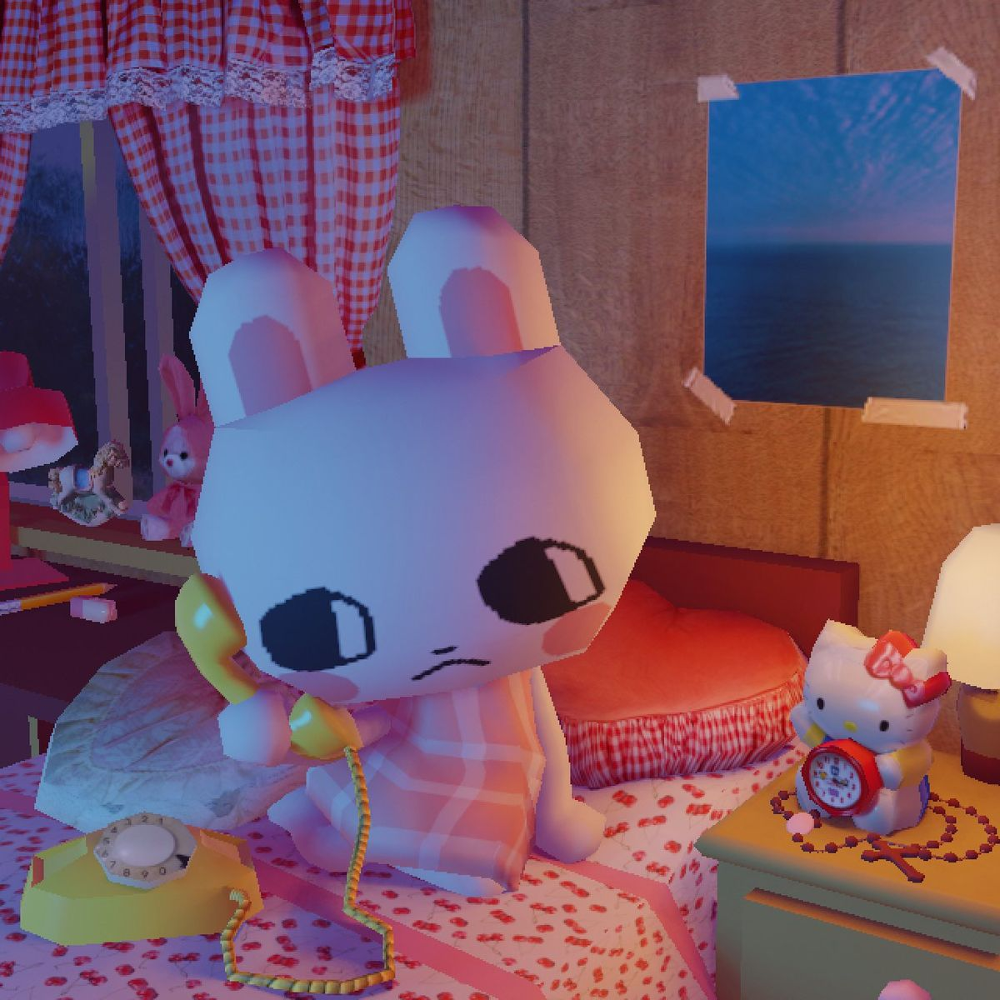

A Hare was very popular with the other beasts who all claimed to be her friends. But one day she heard the hounds approaching and hoped to escape them by the aid of her many Friends. So, she went to the horse, and asked him to carry her away from the hounds on his back. But he declined, stating that he had important work to do for his master. "He felt sure," he said, "that all her other friends would come to her assistance." She then applied to the bull, and hoped that he would repel the hounds with his horns. The bull replied: "I am very sorry, but I have an appointment with a lady; but I feel sure that our friend the goat will do what you want." The goat, however, feared that his back might do her some harm if he took her upon it.The ram, he felt sure, was the proper friend to apply to. So she went to the ram and told him the case. The ram replied: "Another time, my dear friend. I do not like to interfere on the present occasion, as hounds have been known to eat sheep as well as hares." The Hare then applied, as a last hope, to the calf, who regretted that he was unable to help her, as he did not like to take the responsibility upon himself, as so many older persons than himself had declined the task. By this time the hounds were quite near, and the Hare took to her heels and luckily escaped.